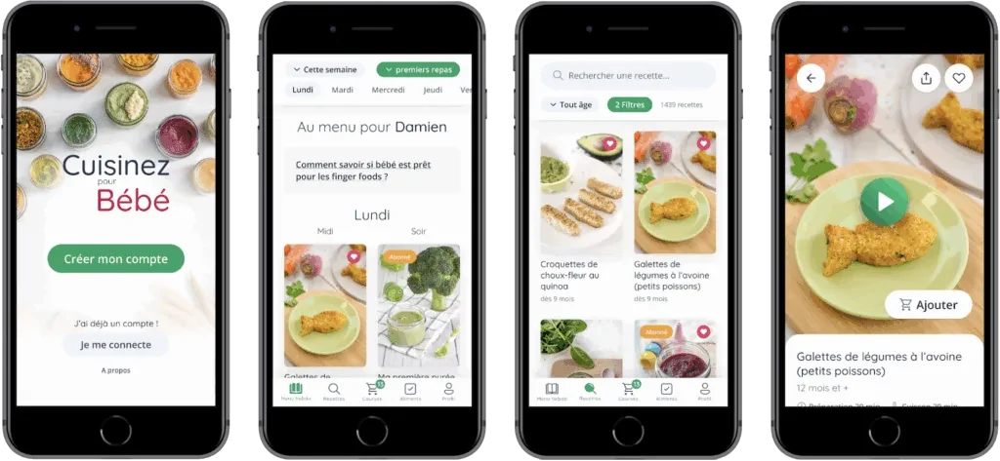
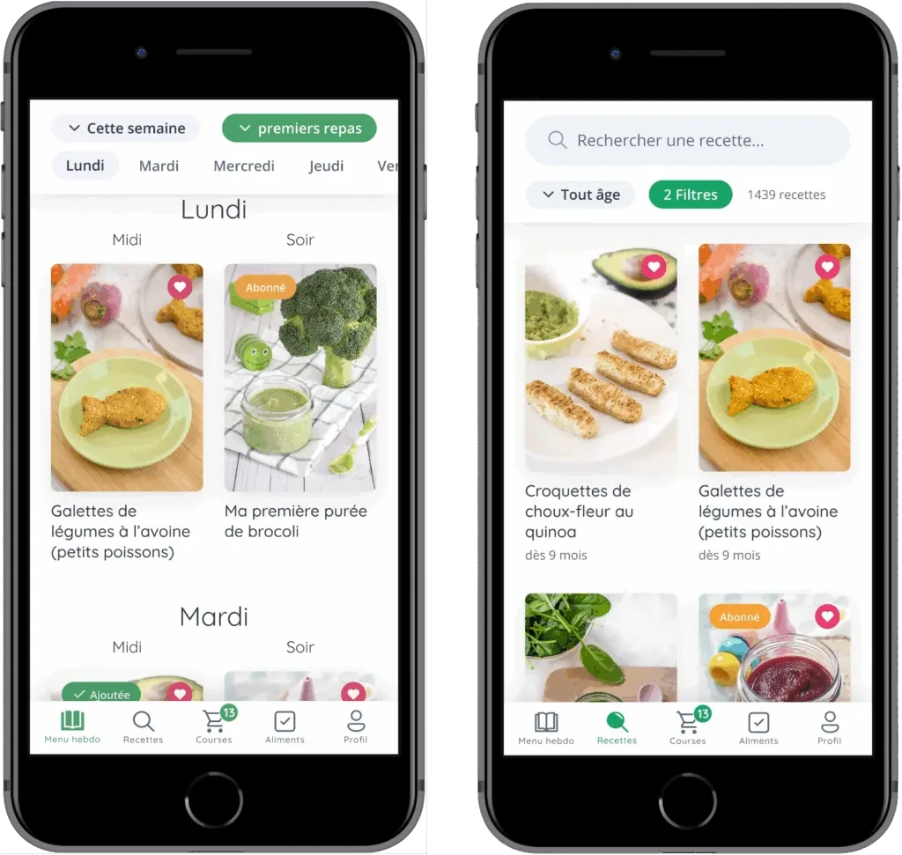
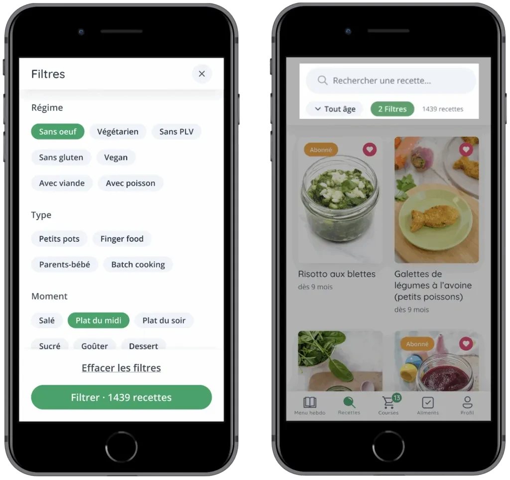

Cuisinez pour Bébé : 1 800 recettes, une seule main libre.
Faire d'un site de recettes très suivi une application qu'un parent pressé utilise en quelques secondes : trouver la bonne recette pour l'âge de son enfant, planifier la semaine, cuisiner sans se perdre.
- Rôle
- UX/UI Designer
- Équipe
- 2 designers, 1 lead développeur
- Plateformes
- iOS & Android (React Native)
- Contexte
- BearStudio, février 2026
- Échelle
- 1 800+ recettes, 150 000+ visites par mois sur le site

Le contexte
Cuisinez pour Bébé est né des recettes maison de Clémence, une jeune maman qui voulait une alimentation saine, simple et variée pour son enfant. Le blog est devenu un site de référence sur la diversification alimentaire : plus de 1 800 recettes classées par âge, des menus hebdomadaires de batch cooking et une communauté très active.
Ce succès a fait apparaître un besoin. La plupart des parents consultaient déjà le site sur leur téléphone, et ils voulaient retrouver leurs recettes, leurs favoris et leurs menus plus vite, dans une vraie application.
Le défi
Transposer tout un univers de contenu sur mobile, sans le rendre plus lourd.
L'application devait être le prolongement naturel du site, avec trois contraintes produit :
- une navigation organisée selon l'âge de l'enfant
- un accès simplifié aux menus de batch cooking
- un modèle freemium compréhensible, qui ne bloque pas la découverte
Le tout pour une personne qui a rarement les deux mains libres : un enfant à gérer, une cuisine en cours, un téléphone tenu d'une main.
Mon rôle
J'ai travaillé en binôme avec le Lead UX/UI Designer de BearStudio, aux côtés du Lead développeur full-stack.
- Comprendre les besoins et les attentes des jeunes parents sur mobile
- Structurer l'architecture de l'information et les parcours
- Prototyper, de la basse à la haute fidélité
- Itérer avec les clients, version après version
Côté technique
Travailler au plus près des développeurs a guidé beaucoup de choix de design.
De la V1 à aujourd'hui
V1 : poser les fondations
La première version transposait les fonctions clés du site. Le but n'était pas d'optimiser chaque interaction, mais de valider les parcours de base et l'intérêt du format application : menus de la semaine dès l'ouverture, catalogue par âge, fiches recettes, favoris, profil, paywall et inscription guidée.
Aujourd'hui : penser en parcours, pas en écrans
En itérant avec les clients, nous avons réorganisé l'application autour de cinq parcours essentiels :
- Planifier les repas de la semaine sans avoir à décider
- Trouver vite une recette adaptée (âge, texture, moment)
- Cuisiner sans friction, avec une lecture claire et continue
- Suivre la diversification dans le temps
- Gérer un profil familial et l'accès premium sans confusion
Depuis, de nouvelles fonctions sont arrivées : la gestion de plusieurs enfants dans un même compte et une liste de courses. Les écrans d'accès au premium ont aussi été retravaillés pour être plus clairs.
La méthode
Chaque évolution passe par des prototypes interactifs avant le développement, pour repérer tôt les pièges classiques du mobile : surcharge visuelle, gestes difficiles, filtres trop complexes, actions secondaires trop visibles, rupture entre la liste et le détail.
- Prototyperbasse puis haute fidélité
- Simulerles enchaînements réels
- Observeroù l'on bloque, où l'on hésite
- Ajusteravec les clients, puis livrer
Les prototypes servent à vérifier quatre choses :
- que l'on comprend où cliquer, quand et pourquoi
- que la navigation reste peu profonde, sans tunnel
- que les listes denses restent lisibles et hiérarchisées
- que les écrans restent cohérents entre eux
Cette démarche a fixé quatre règles pour toute l'application :
- Hiérarchiser : photo, titre, âge, et rien de plus au premier coup d'œil.
- Raccourcir le chemin vers l'action : ouvrir, mettre en favori ou ajouter aux courses sans écran en plus.
- Créer des écrans « carrefours », comme le menu de la semaine ou les recettes, qui regroupent le besoin principal.
- Garder la continuité visuelle : une carte comprise dans le catalogue l'est aussi dans les favoris et le menu.
Zoom : la carte recette
Le catalogue n'est pas un moteur de recherche avancé. Il doit aider un parent à décider vite, à partir de ses critères à lui : l'âge, la texture, le type de repas, les contraintes alimentaires. Il joue trois rôles à la fois : inspirer, aider à trier, et donner un accès rapide à l'action (cuisiner, enregistrer, planifier).
Les contraintes étaient nombreuses : beaucoup de recettes à afficher, des titres parfois très longs et des données inégales, plusieurs critères à croiser, des gestes courts sur mobile, et une continuité à garder entre la liste et la fiche. Le risque était double : un catalogue trop chargé, ou des filtres si complexes qu'ils découragent l'exploration.

1 La carte comme unité de lecture
Chaque carte permet trois lectures rapides : reconnaître l'idée grâce à l'image, comprendre le plat grâce au titre, valider qu'il convient grâce à l'âge. L'image domine, car la qualité des photos est un atout de la marque. Le titre est calibré pour les intitulés longs. L'âge est visible, mais au second plan.
2 Les filtres comme levier principal
Plutôt qu'une option cachée, les filtres réduisent progressivement le choix sans effort mental :
- des familles claires : régime, type de plat, moment, saison, particularités
- une sélection rapide, au pouce
- une validation explicite, quand le parent est prêt, et non à chaque clic
- un retour immédiat sur le nombre de recettes trouvées


Une collaboration dans la durée
BearStudio accompagne Cuisinez pour Bébé depuis 2021. Le travail repose sur la confiance et la réactivité : messages Slack, points réguliers, et vidéos Loom pour détailler une attente ou demander un avis.
C'est ce rythme qui permet de faire évoluer l'app en continu après la V1, au plus près de ce que vivent les parents.
Ce que les parents en disent
Dans les avis de l'App Store et de Google Play et dans les messages reçus par la marque, les mêmes thèmes reviennent : la simplicité d'usage, la clarté des recettes, le temps gagné pour organiser les repas, et la confiance dans le contenu.
L'app aujourd'hui
Les écrans présentés plus haut montrent la version précédente, notre point de départ. Voici à quoi ressemble l'application aujourd'hui, après ces évolutions : le catalogue de recettes, une fiche recette et le menu de la semaine.

Pour aller plus loin
Disponible pour un CDI · Île-de-France
Votre prochain Product Designer, c'est peut-être moi.
Je cherche une équipe où concevoir des produits utiles, du terrain jusqu'au code. Parlons-en.